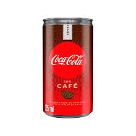

Lanzamiento de Coca-Cola con Café
Una nueva fusión de sabor que combina lo mejor del café y la Coca-Cola.
Una nueva fusión de sabor que combina lo mejor del café y la Coca-Cola.

Coca-Cola impulsa una campaña mundial para reducir el uso de plásticos.
Una edición limitada con un toque afrutado que sorprende al paladar.